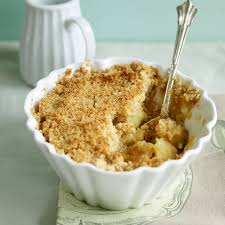

Apple Crumble

- Apples
- Butter
- Sugar
- Flour
- cinnamon
- Oats
- Caster sugar
- demera sugar
Steps
- Add flour, oats, butter and sugar into bowl
- use fingers to mix into a fine crumb
- Peel cooking apples
- Chop apples into chunks
- Place into a pan (with half a pint of water) and place on the hob
- Add castor sugar to sweeten
- Bring to a boil until apples have softened
once the apples have softened, pour them into your ceramic bowl. Pour the crumb over the apples generously. Sprinkle with a little bit of demerera sugar for carmalised layer.
Bake for 30 minutes
serve your apple crumble with a portion of double cream